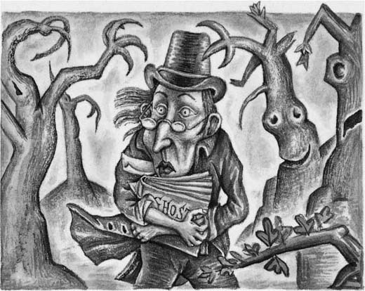
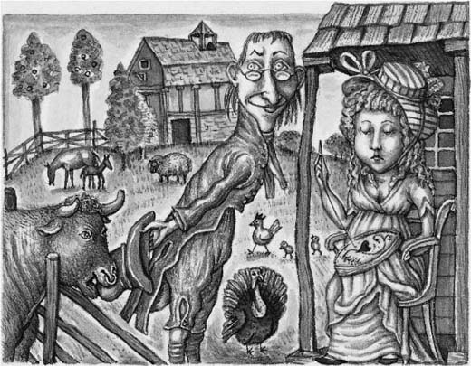
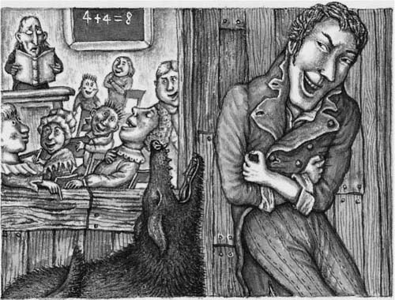
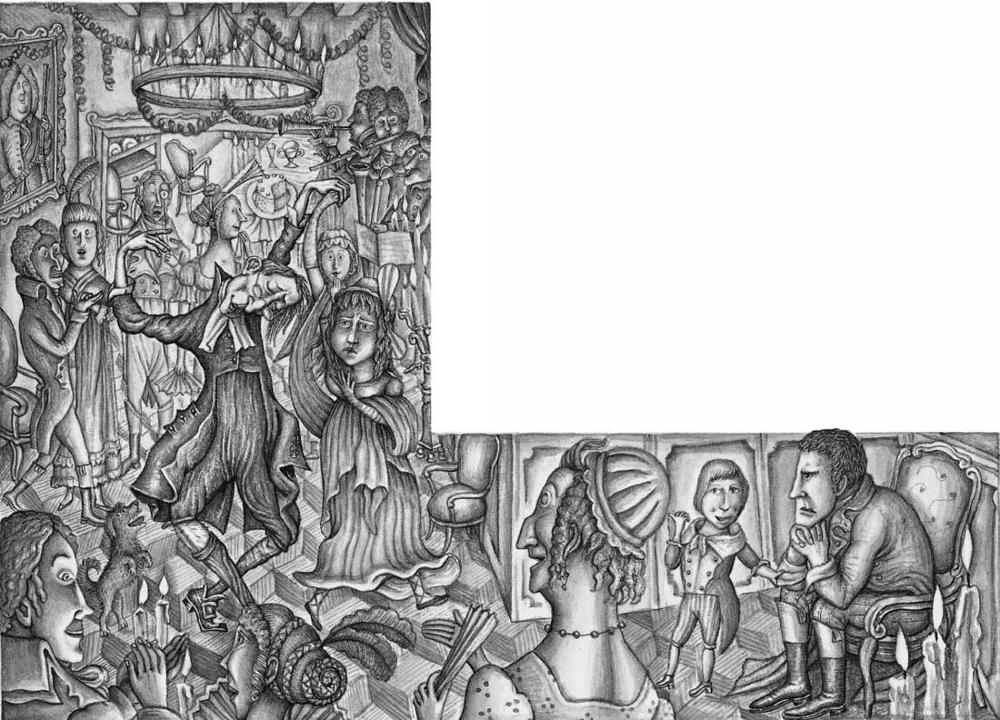
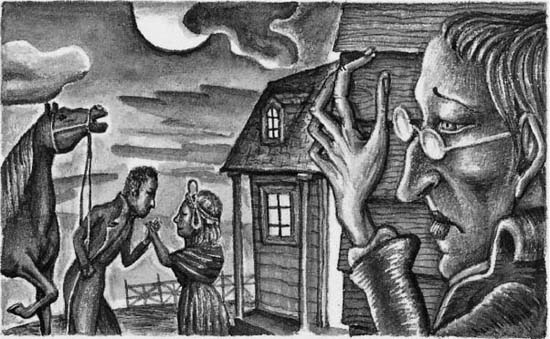

THE LEGEND OF SLEEPY
HOLLOW
1
Listen to Part 1:
The Ghost of the Soldier
On the eastern bank of the great Hudson River, in North America, there is a small town. Its name is Tarry Town. Once the town had a different name. Why did it change? This is the reason. Wives often sent their husbands to the market in the town to buy and sell things. “Come back quickly,” the wives always said. But the husbands never returned home quickly. They stayed or “tarried” in the town and they drank beer at the inns there. So people started to call the place Tarry Town.
About two miles from Tarry Town is a little hollow— or valley—between some high hills. A small river runs through this valley. The valley is a very peaceful place. Everyone who goes there soon feels peaceful. They quickly forget their troubles. And everyone who lives there always feels sleepy. Because of this strange peaceful feeling, the valley is called “Sleepy Hollow”.
Dutch settlers first came to Sleepy Hollow early in the seventeenth century. They made their homes there. But before the Dutch people came, Native Americans had lived there. These people believed in many different spirits. Perhaps these spirits made Sleepy Hollow a strange and mysterious place.
There was something very strange about the people who lived in Sleepy Hollow in the early years of the nineteenth century. They were as peaceful and as sleepy as the valley itself. They believed strongly in God. But they also believed very strongly in ghosts and spirits. They often saw strange things at night. They often heard music in the forest when nobody else was there.
There were many stories about ghosts and spirits in Sleepy Hollow and the area near it. The most famous of these stories was about the ghost of a man on a horse. Lots of people saw the man—that is what they said. He rode a huge black horse, as fast as the wind. He was always seen late at night. And there was something even more terrible about him. He had no head! So the people who lived in the area called him, “The Headless Horseman”.
Many people had seen the Headless Horseman late at night. He rode in Sleepy Hollow and he also traveled on the other roads in the area. He was often seen near a small church, a few miles from the valley.
Who was this Headless Horseman? Nobody really knew. But some people told a story about him.
“The Headless Horseman is the ghost of a soldier,” they said. “This soldier was killed in the war between Britain and the American colony. There was a terrible battle in this area. In this battle, the soldier’s head was shot off by a cannonball from a British gun.
Listen to Part 2:
“His body was taken to a little church near the battlefield,” these people continued. “It was buried in the graveyard next to the church. But his head still lies somewhere on the battlefield. Every night, the Horseman rides back to the battlefield to look for his head. But he never finds it. And he always has to return to the graveyard before dawn. All ghosts have to go back to their graves before the daylight comes. And the Headless Horseman is always in a hurry because he’s always late. That’s why he rides so fast.”
2
The Schoolmaster
The schoolmaster of Sleepy Hollow was a man named Ichabod Crane. His name was a good one because he looked like the kind of bird which is called a crane. He was very tall and thin, with narrow shoulders and long arms and legs. His head was small, and very flat on the top. He had huge ears, large green eyes and a very long nose. He was not handsome at all.
Ichabod’s clothes did not fit him well. They were loose, and they flapped in the wind. So when he walked, the schoolmaster looked very strange.
The school was a low building with one large room, and Ichabod was the only teacher there. This schoolhouse stood by itself at the bottom of the valley. The hills around it were covered with trees. A small river ran near the schoolhouse.
On summer days, the windows of the schoolhouse were always open. Anyone who passed could hear Ichabod’s pupils saying their lessons in sleepy voices.
When lessons had finished for the day, Ichabod often went home with one of the children. Some boys and girls had pretty older sisters. Ichabod liked young, pretty ladies. And some of his pupils had mothers who were good cooks. Ichabod liked to go home with these children most of all.
Ichabod was very thin, but he ate a huge amount of food. He loved talking about food and he loved thinking about food. Most of all, he loved eating it.
Ichabod loved food, but he loved singing too. He taught a group of young people to sing psalms—religious songs. Once a week, the group met for psalm-singing lessons. And every Sunday, Ichabod stood with his pupils in the church in the valley and sang psalms with them.
Listen to Part 3:
Ichabod had a good life. He did not earn very much money from teaching. He could not buy a house of his own. So he stayed at the houses of different farmers in the area. He stayed with each farmer for a week. Each week, a farmer gave the schoolmaster a bed to sleep in and food to eat. And Ichabod helped the farmers with the work on their farms. He mended fences. He took water to the horses. He cut wood for the farmers’ fires. Sometimes he helped the farmers’ wives to look after their children.
The farmers’ wives were always happy to see Ichabod. They often invited him to tea. They made delicious cakes for him. The young women of the area liked Ichabod too. Sometimes he took walks with them, or read them funny stories. They smiled at him whenever they met him.
All the people of Sleepy Hollow respected Ichabod Crane because he was a schoolmaster. He was clever—he worked with his mind, not with his hands. “He’s a very intelligent man,” everyone said. Most of the people in the valley could not read or write. But Ichabod could read. So he was an important man in the area.
Ichabod Crane believed in God, but he also believed very strongly in ghosts and spirits. On summer evenings, after lessons had finished, he often lay on the grass beside the small river. He lay on the warm grass and read his favorite book. It was a book about ghosts.
Ichabod loved the stories in this book, but they frightened him. He believed everything that he read in them! He often read the book until the sky was dark. Then he could no longer see the pages, so he stopped reading. But then he had to walk back in the dark, to the farmhouse where he was staying.
A forest covered a large part of the area. Often, Ichabod had to walk through the forest to get to the farmhouse. These walks in the dark were terrible for him. He saw ghosts and spirits all around him. The branches of the trees looked like ghostly hands. And they were all trying to grab him.

And there were strange noises in the forest at night. They were really the noises of animals and birds in the trees. But to Ichabod, they were the sounds of evil spirits. Sometimes, his heart beat fast with fear and his legs would not move.
“This is terrible!” he thought, whenever this happened. “There are evil spirits here. They’re hiding in the trees and they want to take me away with them. What can I do? I’ll sing a psalm. Then the spirits won’t be able to hurt me.”
So Ichabod often sang a psalm as he walked through the dark forest:
Listen to Part 4:
I’m not afraid of ghosts
or evil spirits of the night.
God will always lead me
from the darkness to the light.
The people of Sleepy Hollow often sat outside the doors of their houses in the evenings. They heard the sound of Ichabod’s strange, high voice as he passed their homes.
“What’s that strange noise?” they asked each other. “Is it a spirit? Oh, no, it’s only Ichabod Crane. He’s singing as he walks home through the forest!”
On winter evenings, Ichabod sometimes sat with the old women of Sleepy Hollow. He sat by their kitchen fires with them, eating apples and listening to their wonderful ghost stories.
Ichabod’s favorite ghost stories were about the Headless Horseman. But when he had to walk home through the forest in the dark winter night, he tried to forget about the stories. He was even more frightened than in the summer.
“Does the terrible Horseman only travel on the roads?” he asked himself. “Or does he haunt the forest too?”
On those dark nights, Ichabod saw the Horseman in every shadow. He heard the noise of the huge black horse in every sound!
3
Ichabod and Katrina
One day, a new pupil joined Ichabod’s group of psalm-singers. Her name was Katrina Van Tassel, and she was the daughter of Baltus Van Tassel, an old farmer. Baltus Van Tassel’s farm was a few miles from Sleepy Hollow.
Listen to Part 5:
Katrina was eighteen years old and she was very beautiful. She had golden blond hair and she liked wearing pretty clothes. All the young men in the area admired Katrina. And Katrina knew this. She enjoyed this admiration very much.
“Katrina is a very pretty girl,” said the people of the area. “Her skirts are too short now! But one day, she will be a good wife for somebody. Her husband will be a very lucky man. He will marry Katrina and he’ll get her father’s farm too.
Katrina was Baltus Van Tassel’s only child. She had no brothers or sisters. So when her parents died, Katrina was going to inherit the farm. The land and everything on it was going to be hers. One day, she was going to be rich.
Ichabod Crane liked women. But when he first met Katrina, he forgot about all other women.
Soon after he met Katrina, Ichabod visited the Van Tassels’ farmhouse. It stood in a wide, grassy place on the bank of the Hudson River. As Ichabod rode up to the farmhouse, he saw cows, geese, ducks, turkeys and hens. They all looked very fat and healthy.
At once, Ichabod began to feel hungry. He thought about huge and wonderful dinners.
“Those chickens will taste delicious when they are cooked,” he thought. “And those geese and turkeys will be wonderful in pies. And the ducks will be very good with onions.”
Then Ichabod looked at all the land which belonged to the farm. He saw fields of golden corn. He saw hundreds of fruit trees, their branches covered with ripe fruit. And when Ichabod saw all these things, he started dreaming about his future life.

“This place is perfect,” he said to himself. “If I marry Katrina, I’ll have an easy life. I won’t have to work. There’ll be lots of delicious food all the time. Katrina will take good care of me. I’ll be very comfortable here with her and our children.
Listen to Part 6:
“Perhaps we’ll sell the farm one day,” he thought. “We’ll get a lot of money and then we’ll travel to another part of America.”
Ichabod was happy. And when he entered the farm-house, he felt even happier. The kitchen was large, warm and comfortable. There was a wonderful smell of food. There were large baskets full of fruit and vegetables, ready for cooking.
In the living room, the fine wooden furniture shone in the sunlight. The cupboards were full of silver plates and china dishes.
From that time, Ichabod thought day and night about Katrina. “I must marry her,” he said to himself. “There’s a wonderful life waiting for me on that farm.”
4
Brom Bones
But there was a problem for Ichabod. All the young men from the area admired Katrina. And there was one young man who admired her very much. He wanted to marry her too. This man’s name was Brom Bones.
Brom Bones was very different from Ichabod. He was tall and handsome. His body was big and strong, and he had short, black, curly hair. He was a very brave young man and he was an excellent horse rider. He often rode in horse-races and he always won them.
Brom Bones was not afraid of anybody or anything. He was the leader of a group of young men. These young men admired Brom and they rode with him everywhere. Sometimes the people of the area heard the sound of horses on the road late at night.
“That’s Brom Bones and his friends!” they said to each other.
Listen to Part 7:
Brom Bones enjoyed playing tricks on people. He was not a bad man, but he liked to have fun.
p“Now Katrina won’t speak to us,” they said. “Brom will win her love easily. And we don’t want to fight with Brom.”
So everybody else stopped trying to win Katrina’s love—everybody except Ichabod Crane.
Ichabod was not worried about Brom Bones and his visits to Katrina. He started to visit her himself. And when the schoolmaster came to the house, Katrina’s father smoked his pipe happily. Her mother sang while she did her work. They both smiled when Ichabod took walks with Katrina, or when he sat and talked with her outside the house. All the Van Tassels were happy.
But when Brom Bones heard about Ichabod’s visits to Katrina, he was not happy.
“What!” he shouted. “Is that ugly schoolmaster visiting Katrina? I’ll fight him. I’ll knock him down and put him on a shelf in his own schoolhouse!”
But Ichabod did not want to fight Brom. Brom was very strong and he could win any fight easily—Ichabod knew that. So the schoolmaster stayed away from Brom. This made Brom even more angry.
“I can’t fight him with my hands because he won’t come near me,” Brom said. “So I’ll try another way of fighting him.”
He started playing tricks on the schoolmaster. First, Brom and his friends got into Ichabod’s schoolhouse one night. They moved all the furniture around. Ichabod was very frightened the next day.
“An evil spirit did this,” he said.
Listen to Part 8:
Next, Brom taught his dog to make a terrible noise. Then he waited outside the schoolhouse with the animal. Whenever Ichabod sang, the dog made this terrible noise. All Ichabod’s pupils laughed.


One fine autumn afternoon, Ichabod was in the schoolhouse with his pupils. Suddenly there was a knock at the door. When Ichabod opened it, he saw one of Baltus Van Tassel’s servants outside.
“You are invited to a party tonight at the Van Tassel farm,” said the servant. “Will you come?”
“Oh, yes!” said Ichabod. He was very happy and excited. He also felt very important. Katrina’s parents had asked him to a party. So they really did like him. They wanted him to marry their daughter. That was good. And he was going to see Katrina at the party.
He sent his pupils home an hour early that day. They were very surprised by this. It had never happened before!
5
The Party
Ichabod spent a long time getting ready for the party. He had an old black suit of clothes. It was his only suit. He brushed it carefully. When Ichabod looked at himself in a mirror, he was very pleased.
Listen to Part 9:
“How handsome I look,” he thought. “Tonight, I’ll win Katrina’s love—I’m sure of that. But I must have a fine horse to ride to the party. Where can I get one? Perhaps I can borrow a horse from Hans Van Ripper.”
Hans Van Ripper owned the farm where Ichabod was staying that week. Ichabod asked to borrow a horse from him. The farmer decided to play a trick on the schoolmaster.
“Yes, you can borrow one of my horses, Ichabod,” he said. “I’ll lend you my best one.”
But when Ichabod saw the horse, he was very surprised. It was old and thin, and it had only one eye.
“Is this your best horse?” he asked the farmer.
“Yes,” replied Hans Van Ripper. “He’s very strong and he runs as fast as a bullet from a gun. His name is Gunpowder.”
Gunpowder did run fast. But he also had a very bad temper. Hans Van Ripper did not tell Ichabod about this. He pointed to the saddle on the horse’s back.
“This is my best saddle,” the farmer said. “Please take care of it.”
Ichabod climbed onto the expensive saddle, and he and Gunpowder started their journey to the Van Tassels’ party. Ichabod and the horse were both very thin and they looked very strange together! Ichabod was not a good horse rider. He sat uncomfortably on Gunpowder’s back. As he rode, he moved his long thin arms up and down, like a bird’s wings. His loose black coat flapped in the wind. He looked like a huge black bird.
It was a beautiful autumn afternoon. The leaves on the trees were red and gold. As Ichabod rode along, he heard the sounds of birds singing. He rode through fields of golden corn, and fields of apple trees. He began to feel hungry. He began to think about cakes and pies.
Listen to Part 10:
At last, Ichabod arrived at the Van Tassels’ farmhouse. The party had already started and many of the farmers from the area were there with their families. Everybody was dressed in their best clothes. Their clothes were very colorful and bright.
The most beautiful girl at the party was Katrina. Everybody admired her. She was laughing and talking to the guests. Ichabod looked at her and he smiled.
But soon, the schoolmaster had an unpleasant surprise. Brom Bones was also at the party. He had come on his big black horse, Daredevil. Brom was standing in the middle of a group of his friends. He was telling stories in a loud voice. Everybody was laughing at his stories.
“Oh, no!” thought Ichabod. “Why is that man here?”
When Brom Bones saw Ichabod, his face became angry. Ichabod hurried away, into the dining room. And when he entered that room, he forgot about Brom Bones at once. He even forgot about Katrina!
In the dining room, a great table was covered with all kinds of wonderful food. There were dishes of cooked meat. There were plates of cakes and pies. Ichabod started eating at once. As he ate, he looked around the room and smiled.
“One day, all this will be mine,” he thought.
At that moment, Katrina’s father came towards him.
“Are you enjoying the party, Ichabod?” Van Tassel asked. “Please eat as much as you want. We have plenty of everything.”
After the meal, nearly everybody danced. Ichabod liked dancing very much. When he danced, he moved his arms and legs very quickly. He looked very strange! But he did not know this.
Listen to Part 11:
“I’m a very good dancer,” he told himself.
Ichabod started dancing with Katrina. Soon, everybody in the room was staring at them. Some people began to laugh.
“How strange Ichabod looks,” they said to each other. “Why does he dance in that way?”

Brom Bones did not dance. He sat by himself in a corner. He stared angrily at Katrina.
“Brom is jealous because Katrina is dancing with me,” thought Ichabod. “That’s good.”
After the dancing had finished, Ichabod felt tired. He joined a group of people by the fire. They were telling stories to each other. Brom Bones was one of the group.
At first, the stories were about the war between Britain and its American colony. But then people started to tell ghost stories. Ichabod listened carefully. He was always very interested in ghost stories.
Several people from Sleepy Hollow were at the party. They started talking about the Headless Horseman.
“The Horseman is riding again,” said one man. “Nobody had seen him for a long time. But this month, several people have seen him. Every night now, he rides from the graveyard and he doesn’t come back until just before dawn.”
Listen to Part 12:
“Yes, that’s right,” said another man. “And did you hear about poor old Farmer Brouwer? He met the Headless Horseman on the road. The Horseman pulled Brouwer up onto his terrible black horse and he rode away with him. He rode until he got to the small bridge near the old church. Then the Horseman threw Farmer Brouwer into the river and he rode away, making a noise like thunder.”
Suddenly Brom Bones spoke.
“I’ve met the Horseman too,” he said. “But I wasn’t afraid of him. I’m a better horse rider than he is.”
“Did you really meet him?” someone asked excitedly. “How did you meet him? Tell us what happened.”
“I met him on the road one night,” replied Brom Bones. “I asked him to race with me. So we raced our horses to the old church. But my horse, Daredevil, was faster than his horse. I won the race easily. And when we got to the bridge near the church, the Horseman disappeared in a flash of fire.”
“You were very brave,” said someone.
Ichabod listened to Brom Bones’s story. Then he himself told a story, about evil spirits in the forest. But it was not as interesting as Brom’s story. And nobody said, “You were very brave” to Ichabod.
At last, the party finished, and it was time to go home. Ichabod went to find Katrina. He wanted to spend a few minutes alone with her.
“You’re looking very beautiful tonight,” he told the young woman. “May I come to see you tomorrow afternoon? I want to speak to you about something very important. I want to ask you a question.”
But Katrina did not look very happy or friendly. She did not want to be alone with Ichabod.
Listen to Part 13:
“No, I’m sorry,” she said. “I won’t be at home tomorrow afternoon.”
Ichabod was surprised. “Oh!” he said. “May I come tomorrow evening then?”
“No, I won’t be here in the evening either,” Katrina replied.
“Well, can I come the next day?”
“No, I’ll be busy all this week,” said Katrina. “Now please excuse me. I have to say goodbye to our other guests.”
A few minutes later, Ichabod saw Katrina with Brom Bones. They were talking together and laughing quietly. Then Brom Bones held Katrina’s hand and kissed it. Katrina was looking very pleased and happy.

“What is happening?” Ichabod asked himself. “Does Katrina really like Brom Bones more than me? That’s not possible! I can’t believe it! Perhaps she wants to make me jealous.”
Ichabod did not say goodbye to Katrina. He left the party quickly. He felt very sad, and he felt very angry too. He went to the stable—the place where the horses were kept—and he found Gunpowder. Gunpowder was asleep. But Ichabod kicked the horse and it quickly woke up.
Ichabod climbed onto Gunpowder’s back and he rode slowly away.
Listen to Part 14:
6
A Terrible Race
It was almost midnight. The moon was shining brightly. Ichabod rode Gunpowder slowly along by the side of some high hills. Below him, on the other side of the road, he could see Tarry Town, on the bank of the wide, dark Hudson River. He could hear the sound of a dog barking on the other side of the river. But the sound was very far away, like a sound in a dream.
As he rode along, the schoolmaster remembered the ghost stories that people had told at the Van Tassels’ party.
Suddenly, a cloud covered the moon. Ichabod felt lonely and afraid. In front of him, a huge tree stood by the side of the road. There was a very sad story about this tree. During the war between Britain and the American colony, a British soldier had hidden in this tree. His name was Major André. The man was a spy, and he was hiding from some American soldiers. Later he was captured and killed. Now, the people of the area called the tree, “Major André’s tree”.
“The tree is haunted by Major André’s ghost,” a lot of people said.
Ichabod remembered this story, and his heart began to beat fast. He was afraid. He did not want to pass Major André’s tree. But there was no other way for him to get home. So he began to sing loudly:
God will lead me safely
around this terrible tree.
No ghost or spirit
is going to frighten me—
Listen to Part 15:
Suddenly he stopped singing. He had heard a noise.
“What was that?” he asked himself. He looked up at the tree. Was something white hanging in it? Something white and terrible? Then he looked again. No, there was only a white mark on one of the branches.
“I’m dreaming,” he told himself. “That noise was only the sound of the wind.”
Ichabod passed the tree safely. But now there was another danger. This danger was more terrible than the tree. There was a forest on one side of the road. And beyond the forest, there was a bridge over a little river. The American soldiers had captured Major André on this bridge.
“Sometimes, Major André’s ghost haunts that bridge at night,” people said.
Ichabod wanted to ride quickly across the bridge. His heart was beating faster and faster. He kicked Gunpowder with both his feet.
“Come on, you stupid old horse,” he said. “Move faster!”
But Gunpowder had a bad temper. He was not feeling happy. He did not want to cross the bridge. He stopped walking forwards. Instead, he turned off the road, into the forest. He ran into the forest for a few moments. Then he stopped very suddenly. Ichabod was not a good rider and he nearly fell off Gunpowder’s back.
Listen to Part 16:
“Move, you stupid animal!” the schoolmaster shouted.
He shouted at the horse and he kicked it again and again. But Gunpowder did not move. The horse was looking at something in the forest. Ichabod looked too. His mouth became dry with fear.
A huge black shape was standing in front of him. What was it? Was it a ghost?
The hair on Ichabod’s head stood up. His body shook. He wanted to escape, but the horse would not move.
“Who are you?” he whispered.
The thing did not answer.
“Who are you?” Ichabod asked again.
Still there was no answer. Ichabod began to sing loudly:
No evil thing can hurt me—
Suddenly, the thing moved. It moved out of the forest, and now it was in the middle of the road. Ichabod could see it more clearly. It had the shape of a large man on a huge black horse.
Then at last, Gunpowder decided to move. He ran back to the road. The horse ran towards the bridge. The strange Horseman waited. He did not move or speak. But when Gunpowder and Ichabod had passed him, he started to move too. He began to follow them. In a moment, he was beside them! They crossed the bridge together.

In a moment, the Horseman